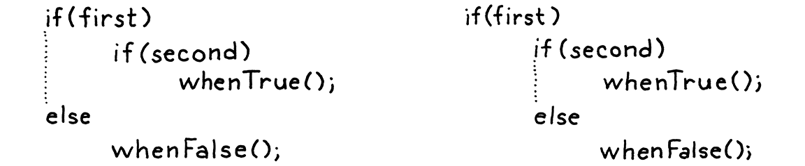

控制流
逻辑，像威士忌，如果摄入量太大，就会失去其有益效果。
-- Edward John Moreton Drax Plunkett, Lord Dunsany
与上一章的艰苦马拉松相比，今天是在雏菊草地上轻松嬉戏。但是，虽然工作很容易，但回报却大得惊人。
现在，我们的解释器只不过是一个计算器。Lox 程序在完成之前只能做固定数量的工作。要让它运行2次，你必须让源代码的长度加倍。我们即将解决这个问题。在本章中，我们的解释器向编程语言大联盟迈出了一大步：图灵完备性。
9.1 图灵机
上世纪初，数学家们陷入了一系列令人困惑的悖论中，这些悖论使他们怀疑他们所建立的工作基础的稳定性。为了应对这场危机，他们回到原点。从一些公理、逻辑和集合论开始，他们希望在不透水的基础上重建数学。
最著名的是罗素悖论。最初，集合论允许您定义任何类型的集合。如果你能用英语描述它，它是有效的。自然地，考虑到数学家对自我参照的偏爱，集合可以包含其他集合。所以 Russell，他是个无赖，想出了：
R 是所有不包含自身的集合的集合。
R 包含自身吗？如果不是，那么根据定义的后半部分，它应该是。但如果是，那么它就不再符合定义。提示头脑爆炸。
他们想严格回答这样的问题：“所有真实的陈述都可以被证明吗？”、“我们可以计算我们可以定义的所有函数吗？”，甚至是更一般的问题，“当我们声称一个函数是‘时，我们的意思是什么？可计算'？
他们假设前两个问题的答案是“是”。剩下的就是证明这一点。事实证明，两者的答案都是“不”，而且令人惊讶的是，这两个问题深深地交织在一起。这是数学的一个迷人的角落，涉及关于大脑能够做什么以及宇宙如何运作的基本问题。我不能在这里做到公正。
我想指出的是，在证明前两个问题的答案是否定的过程中，艾伦图灵和阿隆佐丘奇设计了一个对最后一个问题的精确答案——定义什么样的函数是可计算的。他们每个人都制作了一个微型系统，该系统具有最少的机器集，但仍然足够强大以计算（非常）大类函数中的任何一个。
他们通过证明返回给定语句真值的函数不是可计算的函数，证明了第一个问题的答案是否定的。
这些现在被认为是“可计算的功能”。图灵的系统被称为图灵机。Church 的是lambda 演算。两者仍被广泛用作计算模型的基础，事实上，许多现代函数式编程语言都以 lambda 演算为核心。
图灵称他的发明为“a-machines”，意为“自动”。他没有自我吹嘘到把自己的名字印在上面。后来的数学家为他做到了这一点。这就是你如何在保持谦虚的同时出名。

图灵机具有更好的知名度——目前还没有关于阿朗佐丘奇的好莱坞电影——但这两种形式主义在力量上是相当的。事实上，任何具有最低限度表达能力的编程语言都足以计算任何可计算函数。
您可以通过用您的语言为图灵机编写模拟器来证明这一点。由于图灵证明他的机器可以计算任何可计算的函数，推而广之，这意味着您的语言也可以。您需要做的就是将函数转换为图灵机，然后在您的模拟器上运行它。
如果您的语言具有足够的表现力来做到这一点，那么它就被认为是图灵完备的。图灵机非常简单，所以不需要太多的力量来做到这一点。您基本上需要算术、一点控制流以及分配和使用（理论上）任意数量内存的能力。我们拿到了第一名。到本章结束时，我们将有第二个.
我们几乎也有第三个。您可以创建和连接任意大小的字符串，因此可以存储无限的内存。但是我们没有办法访问字符串的一部分。
9.2 条件执行
足够的历史，让我们的语言活跃起来。我们可以将控制流程大致分为两种：
-
条件或分支控制流用于不执行某些代码。命令式地，您可以将其视为跳过代码区域。
-
循环控制流多次执行一段代码。它会跳回去，以便您可以再次做某事。由于通常不需要无限循环，因此它通常也有一些条件逻辑来知道何时停止循环。
分支更简单，所以我们将从那里开始。C 派生语言有两个主要的条件执行特性，即if语句和名称明确的“条件”运算符(?:)。语句让您有条件地执行if语句，条件运算符让您有条件地执行表达式。
条件运算符也称为“三元”运算符，因为它是 C 语言中唯一接受三个操作数的运算符。
为简单起见，Lox 没有条件运算符，所以让我们开始我们的if声明。我们的语句语法添加了一个新的产生式。
statement → exprStmt
| ifStmt
| printStmt
| block ;
ifStmt → "if" "(" expression ")" statement
( "else" statement )? ;
规则中的分号没有被引用，这意味着它们是语法元语法的一部分，而不是 Lox 的语法。块的末尾没有
;，if语句也没有，除非 then 或 else 语句恰好是以分号结尾的语句。
if语句具有条件表达式，然后是条件为真时要执行的语句。可选地，如果条件为假，它也可以有一个else关键字和一个要执行的语句。语法树节点具有这三个部分中的每一个的字段。
"Expression : Expr expression",
"If : Expr condition, Stmt thenBranch," +
" Stmt elseBranch",
"Print : Expr expression",
// tool/GenerateAst.java, in main()
为新节点生成的代码在附录 II中。
if与其他语句一样，解析器通过前导if关键字识别语句。
private Stmt statement() {
if (match(IF)) return ifStatement();
if (match(PRINT)) return printStatement();
// lox/Parser.java, in statement()
当它找到一个时，它会调用这个新方法来解析其余的：
private Stmt ifStatement() {
consume(LEFT_PAREN, "Expect '(' after 'if'.");
Expr condition = expression();
consume(RIGHT_PAREN, "Expect ')' after if condition.");
Stmt thenBranch = statement();
Stmt elseBranch = null;
if (match(ELSE)) {
elseBranch = statement();
}
return new Stmt.If(condition, thenBranch, elseBranch);
}
// lox/Parser.java, add after statement()
条件周围的括号只有一半有用。您需要在条件和 then 语句之间使用某种定界符，否则解析器无法判断它何时到达条件表达式的末尾。但是后面的?左括号
if没有任何用处。丹尼斯·里奇 (Dennis Ritchie) 把它放在那里，这样他就可以)在没有不平衡括号的情况下用作结束定界符。其他语言如 Lua 和一些 BASIC 使用关键字 like
then作为结束分隔符并且在条件之前没有任何内容。Go 和 Swift 要求语句是花括号块。这让他们可以{在语句的开头使用 来判断条件何时完成。
像往常一样，解析代码与语法密切相关。else它通过查找前面的关键字来检测 else 子句。如果没有，则语法树中的elseBranch字段为null.
看似无害的可选 else 实际上在我们的语法中产生了歧义。考虑：
if (first) if (second) whenTrue(); else whenFalse();
谜语是：else 子句属于哪个if语句？这不仅仅是关于我们如何标记语法的理论问题。它实际上会影响代码的执行方式：
-
如果我们将 else 归属到第一条
if语句， 如果first 是假的 ，无论second是什么值 都会调用whenFalse()，。 -
如果我们将其归属到第二个
if语句，则whenFalse()仅当first为真且second为假时才调用。
由于 else 子句是可选的，并且if语句的结尾没有明确的分隔符标记，因此当您以这种方式嵌套if 时，语法是有歧义的。这种经典的语法陷阱被称为悬空 else问题。

在这里，格式化突出显示了 else 可以被解析的两种方式。但请注意，由于解析器会忽略空白字符，因此这只是对人类读者的指南。
可以定义一个上下文无关的文法来直接避免歧义，但它需要将大部分语句规则拆分成对，一个允许if和else一个不允许。它很烦人。
相反，大多数语言和解析器都以一种特别的方式避免了这个问题。无论他们使用什么 hack 来让自己摆脱困境，他们总是选择相同的解释——绑定到它之前else的最近的if解释。
我们的解析器已经很方便地做到了。由于在返回之前ifStatement()急切地寻找 else，对嵌套系列的最内层调用将在返回到外部if语句之前为自己声明 else 子句。
语法在手，我们准备好解释。
@Override
public Void visitIfStmt(Stmt.If stmt) {
if (isTruthy(evaluate(stmt.condition))) {
execute(stmt.thenBranch);
} else if (stmt.elseBranch != null) {
execute(stmt.elseBranch);
}
return null;
}
// lox/Interpreter.java, add after visitExpressionStmt()
解释器实现是围绕相同 Java 代码的简单包装。它评估条件。如果为真，则执行 then 分支。否则，如果有 else 分支，则执行该分支。
如果将此代码与解释器处理我们已实现的其他语法的方式进行比较，那么使控制流变得特别的部分就是 Javaif语句。大多数其他语法树总是评估它们的子树。在这里，我们可能不会评估 then 或 else 语句。如果其中任何一个有副作用，则不对其进行评估的选择将变得用户可见。
9.3 逻辑运算符
由于我们没有条件运算符，您可能认为我们已经完成了分支，但不是。即使没有三元运算符，也有另外两个运算符在技术上控制流结构——逻辑运算符and和or。
这些与其他二元运算符不同，因为它们会短路。如果在评估左操作数之后，我们知道逻辑表达式的结果必须是什么，我们就不会评估右操作数。例如：
false and sideEffect();
对于and要评估为真值的表达式，两个操作数都必须为真值。我们可以在评估左false操作数时立即看到情况并非如此，因此无需评估sideEffect()，它会被跳过。
这就是为什么我们没有用其他二元运算符来实现逻辑运算符。现在我们准备好了。这两个新运算符在优先级表中的位置较低。||与 C 中的和类似&&，它们每个都有自己的优先级or低于and。我们将它们放在assignment和之间equality。
我一直想知道为什么它们没有相同的优先级，就像各种比较或相等运算符一样。
expression → assignment ;
assignment → IDENTIFIER "=" assignment
| logic_or ;
logic_or → logic_and ( "or" logic_and )* ;
logic_and → equality ( "and" equality )* ;
而不是回落到equality，assignment现在级联到logic_or。两个新规则logic_or和与其他二元运算符logic_and类似。然后logic_and调用equality它的操作数，然后我们链接回表达式规则的其余部分。
语法不关心它们是否短路。这是一个语义问题。
我们可以为这两个新表达式重用现有的 Expr.Binary 类，因为它们具有相同的字段。但是随后visitBinaryExpr()必须检查运算符是否是逻辑运算符之一，并使用不同的代码路径来处理短路。我认为为这些运算符定义一个新类以便它们获得自己的访问方法会更简洁
"Literal : Object value",
"Logical : Expr left, Token operator, Expr right",
"Unary : Token operator, Expr right",
// tool/GenerateAst.java, in main()
为新节点生成的代码在附录 II中。
为了将新表达式编织到解析器中，我们首先将赋值的解析代码更改为 callor()。
private Expr assignment() {
Expr expr = or();
if (match(EQUAL)) {
// lox/Parser.java, in assignment(), replace 1 line
解析一系列or表达式的代码反映了其他二元运算符。
private Expr or() {
Expr expr = and();
while (match(OR)) {
Token operator = previous();
Expr right = and();
expr = new Expr.Logical(expr, operator, right);
}
return expr;
}
// lox/Parser.java, add after assignment()
它的操作数是下一个更高的优先级，即 新的and表达式。
private Expr and() {
Expr expr = equality();
while (match(AND)) {
Token operator = previous();
Expr right = equality();
expr = new Expr.Logical(expr, operator, right);
}
return expr;
}
// lox/Parser.java, add after or()
这需要equality()它的操作数，这样，表达式解析器就又重新组合在一起了。我们准备好解释了。
@Override
public Object visitLogicalExpr(Expr.Logical expr) {
Object left = evaluate(expr.left);
if (expr.operator.type == TokenType.OR) {
if (isTruthy(left)) return left;
} else {
if (!isTruthy(left)) return left;
}
return evaluate(expr.right);
}
// lox/Interpreter.java, add after visitLiteralExpr()
如果将此方法与前一章的visitBinaryExpr()方法进行比较，就会发现不同之处。在这里，我们首先评估左操作数。我们看它的值看能不能短路。如果不是，并且只有到那时，我们才会评估正确的操作数。
这里另一个有趣的部分是决定返回什么实际值。由于 Lox 是动态类型的，我们允许任何类型的操作数并使用真实性来确定每个操作数代表什么。我们对结果应用类似的推理。逻辑运算符不是承诺按字面意思返回trueorfalse，而是仅仅保证它将返回一个具有适当真实性的值。
幸运的是，我们手边有正确的真实值——操作数本身的结果。所以我们使用那些。例如：
print "hi" or 2; // "hi".
print nil or "yes"; // "yes".
在第一行，"hi"是真的，所以or短路并返回它。在第二行，nil是假的，所以它计算并返回第二个操作数，"yes"。
这涵盖了 Lox 中的所有分支原语。我们准备好跳到循环。你看到我在那里做了什么吗？跳到前边, 获取？看，这就像对... 哦，算了。
9.4 循环
Lox 具有两个循环控制流语句，while和for. while循环比较简单，所以将从这里开始。它的语法与 C 中的相同。
statement → exprStmt
| ifStmt
| printStmt
| whileStmt
| block ;
whileStmt → "while" "(" expression ")" statement ;
我们向语句规则添加另一个子句，指向 while 的新规则。它需要一个while关键字，后跟一个带括号的条件表达式，然后是主体的语句。该新语法规则获得语法树节点。
"Print : Expr expression",
"Var : Token name, Expr initializer",
"While : Expr condition, Stmt body"
));
// tool/GenerateAst.java, in main(), add “,” to previous line
为新节点生成的代码在附录 II中。
该节点存储条件和正文。在这里您可以看到为什么为表达式和语句提供单独的基类是很好的。字段声明清楚地表明条件是一个表达式，主体是一个语句。
在解析器中，我们遵循与if语句相同的过程。首先，我们添加另一个案例statement()来检测和匹配前导关键字
if (match(PRINT)) return printStatement();
if (match(WHILE)) return whileStatement();
if (match(LEFT_BRACE)) return new Stmt.Block(block());
// lox/Parser.java, in statement()
将实际工作委托给此方法：
private Stmt whileStatement() {
consume(LEFT_PAREN, "Expect '(' after 'while'.");
Expr condition = expression();
consume(RIGHT_PAREN, "Expect ')' after condition.");
Stmt body = statement();
return new Stmt.While(condition, body);
}
// lox/Parser.java, add after varDeclaration()
语法非常简单，这是将它直接翻译成 Java。说到直接翻译成 Java，下面是我们如何执行新语法：
@Override
public Void visitWhileStmt(Stmt.While stmt) {
while (isTruthy(evaluate(stmt.condition))) {
execute(stmt.body);
}
return null;
}
// lox/Interpreter.java, add after visitVarStmt()
与 if的访问方法一样，此访问者使用相应的 Java 功能。这种方法并不复杂，但它使 Lox 更加强大。我们终于可以编写一个运行时间不受源代码长度严格限制的程序。
9.5 For 循环
我们来到最后一个控制流结构，Olde C 风格的for循环。我可能不需要提醒你，但它看起来像这样：
for (var i = 0; i < 10; i = i + 1) print i;
在语法中，如下：
statement → exprStmt
| forStmt
| ifStmt
| printStmt
| whileStmt
| block ;
forStmt → "for" "(" ( varDecl | exprStmt | ";" )
expression? ";"
expression? ")" statement ;
大多数现代语言都有更高级的循环语句，用于迭代任意用户定义的序列。C# 有
foreach，Java 有“enhanced for”，甚至 C++for现在也有基于范围的语句。for通过隐式调用被循环对象支持的迭代协议，它们提供了比 C 语句更清晰的语法。我喜欢那些。但是，对于 Lox，我们受限于一次构建解释器一章。我们还没有对象和方法，所以我们无法定义
for循环可以使用的迭代协议。所以我们将坚持使用老派的 Cfor循环。将其视为“复古”。控制流语句的固定器。
在括号内，您有三个用分号分隔的子句：
-
第一个子句是初始化器。它只执行一次，然后再执行任何其他操作。它通常是一个表达式，但为了方便起见，我们也允许使用变量声明。在这种情况下，变量的作用域为
for循环的其余部分——其他两个子句和循环体。 -
接下来是条件。与在
while循环中一样，此表达式控制何时退出循环。它在每次迭代开始时计算一次，包括第一次。如果结果为真，则执行循环体。否则，它保释。 -
最后一个子句是increment。它是一个任意表达式，在每次循环迭代结束时做一些工作。表达式的结果被丢弃，所以它必须有副作用才能有用。实际上，它通常会增加一个变量。
这些子句中的任何一个都可以省略。右括号之后是主体的语句，主体通常是一个块。
9.5.1 脱糖 desugaring
这需要很多机制，但请注意，它们完成的都是现在已有语句可以完成的功能，并没有添加新功能。如果for循环不支持初始化子句，可以将初始化表达式放在for语句之前。如果没有增量(increment)子句，可以自己简单地将增量表达式放在正文的末尾。
换句话说，Lox不需要for循环，它们只是让一些常见的代码模式写起来更愉快。这些类型的功能称为句法糖。例如，前面的for循环可以这样重写：
{
var i = 0;
while (i < 10) {
print i;
i = i + 1;
}
}

这个令人愉快的短语是 Peter J. Landin 于 1964 年创造的，用来描述 ALGOL 等语言支持的一些漂亮的表达形式如何成为一种甜味剂，洒在更基础的——但可能不太令人满意的——lambda演算之上。
该脚本与前一个脚本具有完全相同的语义，尽管看起来不那么容易。像 Lox 的for循环这样的语法糖功能使语言的工作更加愉快和高效。但是，特别是在复杂的语言实现中，每一种需要后端支持和优化的语言功能都是昂贵的。
我们可以通过脱糖来吃蛋糕。这个有趣的词描述了一个过程，在这个过程中，前端使用语法糖获取代码并将其翻译成后端已经知道如何执行的更原始的形式。
哦，我多么希望公认的术语是“焦糖化”。如果你不打算坚持下去，为什么要引入一个比喻呢？
我们将把for循环脱糖到while解释器已经处理的循环和其他语句。在我们简单的解释器中，脱糖并没有为我们节省多少工作，但它确实给了我一个向您介绍这项技术的借口。因此，与前面的语句不同，我们不会添加新的语法树节点。相反，我们直接进行解析。首先，添加导入马上需要的包。
import java.util.ArrayList;
import java.util.Arrays;
import java.util.List;
// lox/Parser.java
像其他语句一样，通过匹配其关键字来开始解析for循环。
private Stmt statement() {
if (match(FOR)) return forStatement();
if (match(IF)) return ifStatement();
// lox/Parser.java, in statement()
这是有趣的地方。脱糖将在这里发生，所以我们将一次构建这个方法，从子句之前的左括号开始。
private Stmt forStatement() {
consume(LEFT_PAREN, "Expect '(' after 'for'.");
// More here...
}
// lox/Parser.java, add after statement()
接下来的第一个子句是初始化器。
consume(LEFT_PAREN, "Expect '(' after 'for'.");
Stmt initializer;
if (match(SEMICOLON)) {
initializer = null;
} else if (match(VAR)) {
initializer = varDeclaration();
} else {
initializer = expressionStatement();
}
}
// lox/Parser.java, in forStatement(), replace 1 line
如果(后面的token是分号，则初始化程序已被省略。否则，检查var关键字以查看它是否是变量声明。如果两者都不匹配，则它必须是一个表达式。我们对其进行解析并将其包装在表达式语句中，以便初始化程序始终为 Stmt 类型。
在前一章中，我说过我们可以将表达式和语句语法树分成两个单独的类层次结构，因为语法中没有一个地方可以同时允许表达式和语句。我猜这不完全正确。
接下来是条件。
initializer = expressionStatement();
}
Expr condition = null;
if (!check(SEMICOLON)) {
condition = expression();
}
consume(SEMICOLON, "Expect ';' after loop condition.");
}
// lox/Parser.java, in forStatement()
同样，我们查找分号以查看该子句是否已被省略。最后一个子句是增量。
consume(SEMICOLON, "Expect ';' after loop condition.");
Expr increment = null;
if (!check(RIGHT_PAREN)) {
increment = expression();
}
consume(RIGHT_PAREN, "Expect ')' after for clauses.");
}
// lox/Parser.java, in forStatement()
它类似于条件子句，只是这个子句以右括号终止。剩下的就只有循环体了。
这只是我还是听起来病态？剩下的就这些了...是身体”。
consume(RIGHT_PAREN, "Expect ')' after for clauses.");
Stmt body = statement();
return body;
}
// lox/Parser.java, in forStatement()
我们已经解析了循环的所有不同部分，for生成的 AST 节点位于少数 Java 局部变量中。这就是脱糖的用武之地。我们采用这些并使用它们来合成表达for循环语义的语法树节点，就像我之前向您展示的手动脱糖示例一样。
如果我们向后工作，代码会更简单一些，所以我们从增量子句开始。
Stmt body = statement();
if (increment != null) {
body = new Stmt.Block(
Arrays.asList(
body,
new Stmt.Expression(increment)));
}
return body;
// lox/Parser.java, in forStatement()
增量（如果有的话）在循环的每次迭代中在主体之后执行。为此，我们用一个小块替换主体，该块包含原始主体，后跟一个计算增量的表达式语句。
}
if (condition == null) condition = new Expr.Literal(true);
body = new Stmt.While(condition, body);
return body;
// lox/Parser.java, in forStatement()
接下来，我们获取条件和主体并使用原始循环构建while循环。如果条件被省略，我们就会陷入true无限循环。
body = new Stmt.While(condition, body);
if (initializer != null) {
body = new Stmt.Block(Arrays.asList(initializer, body));
}
return body;
// lox/Parser.java, in forStatement()
最后，如果有初始化器，它会在整个循环之前运行一次。我们再次通过将整个语句替换为运行初始化程序然后执行循环的块来做到这一点。
就是这样。解释器现在支持 C 风格的for循环，根本不需要接触 Interpreter 类。由于我们对节点进行了脱糖，解释器已经知道如何访问，因此没有更多的工作要做。
最后，Lox 强大到足以让我们开心，至少几分钟。这是一个打印斐波那契数列中前 21 个元素的小程序：
var a = 0;
var temp;
for (var b = 1; a < 10000; b = temp + b) {
print a;
temp = a;
a = b;
}
挑战
-
从现在开始的几章中，当 Lox 支持first-class函数和动态派发时，从技术上讲，我们将不需要语言中内置的分支语句。展示如何根据这些条件执行。说出一种将这种技术用于其控制流的语言。
-
同样，只要我们的解释器支持重要的优化，就可以使用这些相同的工具来实现循环。它是什么，为什么有必要？说出一种使用这种迭代技术的语言。
-
与 Lox 不同，大多数其他 C 风格语言也支持循环内的语句
break和continue。添加对break语句的支持。
语法是一个break关键字后跟一个分号。break语句出现在任何封闭循环之外应该是一个语法错误。在运行时，break语句会导致执行跳转到最近的封闭循环的末尾并从那里继续。请注意，break可能嵌套在其他if也需要退出的块和语句中。
设计说明：一勺语法糖
当你设计自己的语言时，你可以选择向语法中注入多少语法糖。你是做一种不加糖的健康食品，其中每个语义操作都映射到一个单一的句法单元，还是一些颓废的甜点，每一个行为都可以用十种不同的方式表达？成功的语言存在于这个连续体的所有点上。
最尖刻的是那些语法极少的语言，如 Lisp、Forth 和 Smalltalk。Lispers 著名地声称他们的语言“没有句法”，而 Smalltalkers 自豪地表明你可以在索引卡上填满整个语法。这个部落的哲学是语言不需要语法糖。相反，它提供的最小语法和语义足够强大，可以让库代码像语言本身的一部分一样具有表现力。
靠近这些的是 C、Lua 和 Go 等语言。他们的目标是简单明了而不是极简主义。有些语言，比如 Go，故意避开语法糖和前一类的语法可扩展性。他们希望语法摆脱语义的影响，因此他们专注于保持语法和库的简单性。代码应该显而易见而不是美观。
在中间的某个地方，您可以使用 Java、C# 和 Python 等语言。最终你会接触到 Ruby、C++、Perl 和 D——这些语言在语法中塞进了如此多的句法，键盘上的标点符号已经用完了。
在某种程度上，频谱上的位置与年龄相关。在以后的版本中添加一些语法糖相对容易。新语法很受欢迎，它破坏现有程序的可能性比破坏语义要小。一旦添加，就永远无法将其删除，因此语言往往会随着时间的推移而变甜。从头开始创建一种新语言的主要好处之一是它让你有机会刮掉那些积累的糖霜层并重新开始。
句法糖在 PL 知识分子中名声不好。那群人对极简主义有着真正的迷信。这是有一定道理的。设计不当、不需要的语法会增加认知负担，而不会增加足够的表现力来承载它的重量。由于总是存在将新功能塞入语言的压力，因此需要遵守纪律并注重简单性以避免臃肿。一旦你添加了一些语法，你就会坚持使用它，所以保持简洁是明智的。
同时，大多数成功的语言确实有相当复杂的语法，至少在它们被广泛使用的时候是这样。程序员在他们选择的语言上花费了大量时间，这里和那里的一些细节确实可以提高他们工作的舒适度和效率。
取得正确的平衡——为你的语言选择合适的甜度——取决于你自己的味觉。